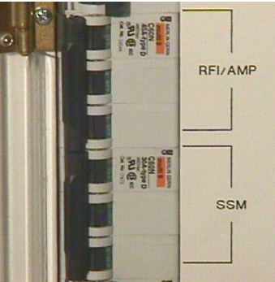
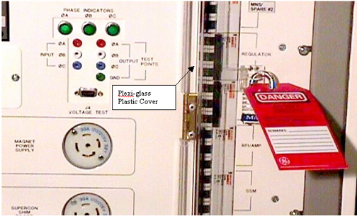

Operating Documentation
Direction 5440000, Rev# 5
Signa HDxt Service Methods
Module Version 1.0, Version Date 5/3/07
Operating Documentation |
| Required Persons | Preliminary Reqs | Procedure | Finalization |
|---|---|---|---|
| 1 | 0 min | 30 mins | 0 min |
Later versions of the Phoenix PDU have a clear plastic cover over the breaker panel. This clear plastic cover allows for local power isolation using individual breakers for sub components in the Signa System.
| Item | Qty | Effectivity | Part# | Manufacturer | |
|---|---|---|---|---|---|
| Lockout/Tog out Multiple locking device | 1 | - | 46-194427P313 | - | |
| Brass Master Padlock | 1 | - | 46-194427P230 | - | |
| Red warning tag | 2 | - | 46-194427P322 | - | |
| Line cold plug cover | 1 | - | 46-194427P231 | - | |
| ||||
| POSSIBLE SERIOUS INJURY OR DEATH | ||||
| Electrical Shock Hazard | ||||
| REMOVE POWER FROM THE RF/PDU CABINET BEFORE ATTEMPTING TO REMOVE ANY COMPONENTS FROM THE SYSTEM |
Remove the cover from the front of the SRF or ACGD cabinet.
Open Plexi-glass plastic door over the front of the PDU breakers and switch off the appropriate sub-system breakers. See Illustration Illustration 1
Illustration 1: BREAKER IDENTIFICATION

Use a digital multimerter and verify that AC voltage is not present at the device that correspond to the breaker in Step 2.
Close the plexi-glass plastic cover and lock and tag it out. See Illustration 2
Illustration 2: LOCKOUT AND TAGOUT OF BREAKERS
Alert necessary personnel that power is being re-applied.
Remove the cover from the front of the SRF or ACGD cabinet.
Remove the lock and the tag.
Open plastic door over the front of the PDU breakers and switch on the appropriate sub-system breakers. See Illustration 2.
Flip the circuit breaker for the Operators Workspace PC, ON.
Flip the circuit breaker for the Operators Workspace Host, ON
At this time refer to illustration Illustration 3 and power on any other appropriate circuit breakers, you may have turned off.
Illustration 3: REMOVE LOCKOUT AND TAGOUT FROM BREAKERS

Power up the PC computer
Power up the Host computer
Boot Signa and log into scanning level.
Insure all subsystems have powered up successfully
Do a test phantom scan to insure proper scanning